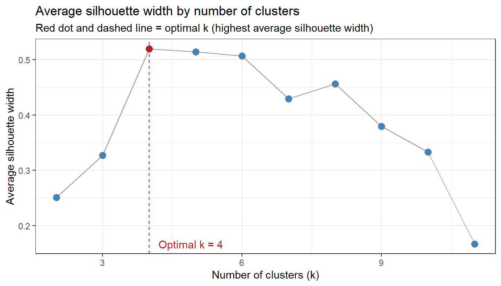
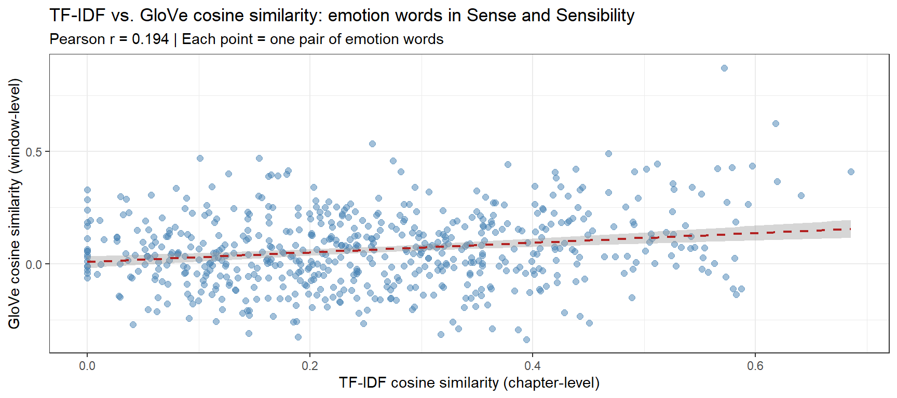

This tutorial introduces Semantic Vector Space Models (VSMs) in R.1 Semantic vector space models — also known as distributional semantic models — represent the meaning of words as points in a high-dimensional mathematical space, where the geometry of that space encodes semantic relationships. Words that are used in similar contexts end up close together; words used in very different contexts end up far apart.
This tutorial is aimed at beginner to intermediate users of R. The goal is to provide both a solid conceptual foundation and practical, reproducible implementations of the most important VSM methods in linguistics and computational semantics. We work through a complete analysis of adjective amplifiers (following Levshina (2015)), then extend the toolkit to TF-IDF weighting, dense word vectors via truncated SVD / LSA, and a range of visualisation techniques — including dendrograms, cosine heatmaps, silhouette plots, spring-layout conceptual maps, and t-SNE / UMAP projections. A full second example applies the same workflow to emotion vocabulary in Jane Austen’s Sense and Sensibility, where the larger corpus makes genuine GloVe training via text2vec feasible.
Some familiarity with basic statistics (correlation, distance measures) is helpful but not required.
Learning Objectives
By the end of this tutorial you will be able to:
Explain the distributional hypothesis and describe how VSMs operationalise it
Build a term–context matrix from raw corpus data and compute PPMI weights
Compute TF-IDF as an alternative frequency weighting scheme
Calculate cosine similarity between word vectors and interpret the results
Visualise semantic similarity as a dendrogram, heatmap, silhouette plot, spring-layout conceptual map, and t-SNE / UMAP scatter plot
Determine the optimal number of semantic clusters using silhouette width and PAM
Derive dense word vectors from a PPMI matrix via truncated SVD (LSA), and train GloVe embeddings on a larger corpus using text2vec
Apply the full VSM workflow to a second linguistic domain — emotion vocabulary in a literary corpus — and contrast the results with those from the amplifier example
Interpret the output of a complete VSM analysis, compare results across input types and weighting schemes, and report findings clearly
Citation
Martin Schweinberger. 2026. Semantic Vector Space Models in R. The Language Technology and Data Analysis Laboratory (LADAL), The University of Queensland, Australia. url: https://ladal.edu.au/tutorials/semantic_vectors/semantic_vectors.html (Version 3.1.1).
What Are Semantic Vector Space Models?
Section Overview
What you will learn: The distributional hypothesis; how raw co-occurrence counts are transformed into meaningful semantic representations; the difference between count-based VSMs and neural word embeddings; and which method to choose for a given research question
The Distributional Hypothesis
The intellectual foundation of all semantic vector space models is a deceptively simple idea known as the distributional hypothesis:
“You shall know a word by the company it keeps.”(Firth 1957, 11)
More formally, Harris (1954) proposed that words appearing in similar linguistic contexts tend to have similar meanings. If very and really both frequently precede adjectives like nice, good, and interesting, their distributional profiles are similar — and we can infer that they are semantically related (near-synonymous amplifiers in this case).
The power of this idea is that it allows us to derive semantic representations automatically from large bodies of text, without any human annotation of meaning. All we need is a corpus and a way to count context co-occurrences.
From Words to Vectors
A term–context matrix is the basic data structure of a VSM. Each row represents a target word and each column represents a context (another word, a document, or a window of surrounding text). Each cell records how often the target and context co-occurred.
Consider a tiny example with three amplifiers and four adjectives:
A tiny illustrative term–context matrix
nice
good
hesitant
loud
very
12
15
1
2
really
10
11
2
3
utterly
0
1
8
7
In this space, very and really have similar row vectors (both high for nice/good, low for hesitant/loud) while utterly has a very different profile (high for hesitant/loud). Vector similarity captures this: very and really should be close; utterly should be distant from both.
From Raw Counts to Meaningful Weights
Raw counts are a poor basis for similarity: high-frequency words (the, be) co-occur with almost everything and produce spuriously high similarities. Two transformations correct for this:
PPMI (Positive Pointwise Mutual Information) measures how much more often two words co-occur than expected if they were statistically independent. It rewards unexpected co-occurrences and ignores expected ones:
\[\text{PPMI}(w, c) = \max\!\left(0,\ \log_2 \frac{P(w, c)}{P(w) \cdot P(c)}\right)\]
TF-IDF (Term Frequency – Inverse Document Frequency) is used when the “context” is a document rather than a word window. It rewards words that are frequent in a specific document but rare across the collection — making each word’s vector more distinctive:
Both transformations produce sparser, more discriminative vectors.
Count-Based VSMs vs. Neural Word Embeddings
Two broad families of semantic vector models are in common use:
Count-based vs. neural word embeddings
Approach
Examples
How trained
Vector size
Best for
Count-based
PPMI, TF-IDF, LSA
Matrix algebra on co-occurrence counts
Vocabulary × vocabulary
Small–medium corpora; interpretable; fast
Neural (predictive)
word2vec, GloVe, fastText
Neural network predicts context from word
50–300 dense dims
Large corpora; captures analogy relations; state of the art
Count-based models are fully transparent and reproducible on any corpus size. Neural embeddings require more data but capture richer semantic structure and generalise better across tasks. This tutorial covers both.
✎ Check Your Understanding — Question 1
The distributional hypothesis states that:
Frequent words are more semantically important than rare words
Words occurring in similar contexts tend to have similar meanings
Word meaning is fully determined by grammatical category
Semantic similarity can only be measured by human annotation
Answer
b) Words occurring in similar contexts tend to have similar meanings
This is the core principle behind all VSMs — the insight that the distribution of a word across contexts (the other words it appears with, the documents it appears in) encodes its meaning. Firth’s aphorism “you shall know a word by the company it keeps” is the most famous formulation. Options (a), (c), and (d) are all incorrect: frequency does not determine importance, grammatical category is a structural not a semantic criterion, and VSMs derive similarity automatically from co-occurrence data without human annotation.
Setup
Installing Packages
Code
# Run once — comment out after installationinstall.packages("coop")install.packages("dplyr")install.packages("tidyr")install.packages("ggplot2")install.packages("ggrepel")install.packages("cluster")install.packages("factoextra")install.packages("flextable")install.packages("igraph")install.packages("ggraph")install.packages("pheatmap")install.packages("RColorBrewer")install.packages("text2vec")install.packages("Rtsne")install.packages("umap")install.packages("stringr")install.packages("tibble")install.packages("purrr")
What you will learn: How to build and interpret a semantic vector space model for a concrete linguistics research question — the distributional similarity of English adjective amplifiers
Background
Adjective amplifiers are adverbs that intensify the meaning of an adjective, such as very, really, so, completely, totally, and utterly. Although amplifiers all share the intensifying function, they are not freely interchangeable: some are “default” boosters usable with a wide range of adjectives, while others have more restricted collocational profiles.
Following Levshina (2015), we investigate which amplifiers are semantically similar — measured by the similarity of their co-occurrence profiles with adjectives — and how they cluster into groups of interchangeable variants.
Examples of amplifier variation:
Amplifier interchangeability is context-dependent
Acceptable
Borderline
Unusual
very nice
completely nice (??)
utterly nice (?)
totally wrong
very wrong
—
absolutely brilliant
really brilliant
so brilliant (informal)
Loading and Inspecting the Data
The data set vsmdata contains 5,000 observations of adjectives with or without an amplifier, drawn from a corpus of spoken and written English.
We remove unamplified adjectives, filter out much and many (which behave differently from intensifying amplifiers), and collapse low-frequency adjectives (< 10 occurrences) into a bin category.
What you will learn: How to construct a term–context matrix (TCM), convert it to a binary co-occurrence matrix, and compute PPMI weights — the standard count-based representation for a VSM
Step 1: Create the Co-occurrence Matrix
We use ftable() to create a cross-tabulation of adjectives × amplifiers, giving us the raw term–document matrix (TDM).
We convert all counts > 1 to 1 (presence/absence) and remove adjectives that were never amplified (they carry no information about amplifier similarity).
Code
# Binarise: 1 = co-occurred, 0 = did nottdm <-t(apply(tdm, 1, function(x) ifelse(x >1, 1, x)))# Remove adjectives never amplifiedtdm <- tdm[which(rowSums(tdm) >1), ]cat("Matrix after filtering:", dim(tdm), "(adjectives × amplifiers)\n")
Matrix after filtering: 11 12 (adjectives × amplifiers)
Converting raw counts to binary (0/1) prevents high-frequency adjectives from dominating the similarity calculation. An adjective that appears 50 times with very should not have 50 times the influence of one that appears once. Binarisation treats all co-occurrences equally, focusing the model on which adjectives each amplifier tends to modify rather than how often.
For other research questions (e.g. building document vectors for topic modelling), keeping raw counts or TF-IDF weights may be more appropriate.
Step 3: Compute PPMI
PPMI rewards unexpected co-occurrences and floors negative PMI values at zero, preventing uninformative negative associations from distorting the similarity space.
When contexts are documents rather than individual words, TF-IDF is the standard alternative to PPMI. It rewards terms that are characteristic of specific documents and penalises ubiquitous terms.
Here we treat each amplifier as a “document” and compute TF-IDF weights for the adjectives (terms).
Code
# TF-IDF: rows = adjectives (terms), columns = amplifiers (documents)# TF = term count in document (column) / total terms in document# IDF = log(N_documents / df_term)raw_counts <-t(tdm) # amplifiers × adjectives# Term frequency (per amplifier)tf <-apply(raw_counts, 1, function(row) row /sum(row)) # adj × amp# Document frequency and IDFdf <-rowSums(t(raw_counts) >0) # how many amplifiers each adjective appears withN <-ncol(raw_counts) # number of amplifiersidf <-log(N / (df +1)) # +1 smoothing# TF-IDF matrix: multiply each row of tf by its idftfidf_mat <-sweep(tf, 1, idf, FUN ="*")cat("TF-IDF matrix dimensions:", dim(tfidf_mat), "\n")
TF-IDF matrix dimensions: 11 12
PPMI vs. TF-IDF: Which Should I Use?
Criterion
PPMI
TF-IDF
Context type
Word window / sentence
Document
What it rewards
Unexpected word–word co-occurrence
Distinctive term–document association
Common in
Distributional semantics, VSMs
Information retrieval, topic modelling
Handles zero counts
Floor at 0 (PPMI)
Smoothing needed
For studying word–word semantic similarity (as in the amplifier example), PPMI is standard. For studying document similarity or keyword profiling, TF-IDF is preferred. The two can be combined when contexts are documents but you want word-level similarity.
✎ Check Your Understanding — Question 2
A researcher computes raw co-occurrence counts between 20 target verbs and 500 context nouns. She then calculates PPMI. The word “thing” has a very high raw count with almost every verb but a near-zero PPMI with most of them. Why?
PPMI penalises high-frequency context words whose co-occurrences are expected by chance
PPMI removes all words that appear more than 100 times
“thing” is not a valid context word for verbs
High raw counts always lead to high PPMI values
Answer
a) PPMI penalises high-frequency context words whose co-occurrences are expected by chance
PPMI is defined as max(0, log₂(P(w,c) / P(w)·P(c))). For a very frequent context word like “thing”, P(c) is large, making the denominator P(w)·P(c) also large. If the observed joint probability P(w,c) is roughly proportional to the product of the marginals — i.e. the co-occurrence is about as frequent as chance alone would predict — the PMI is near zero or negative, and PPMI floors it at zero. This is a feature, not a bug: “thing” co-occurs with almost everything because it is very frequent, not because of a meaningful semantic relationship. PPMI correctly identifies this as uninformative. Options (b), (c), and (d) are all incorrect.
Computing Cosine Similarity
Section Overview
What you will learn: How cosine similarity is computed from word vectors, why it is preferred over Euclidean distance for high-dimensional sparse data, and how to interpret the resulting similarity matrix
What Is Cosine Similarity?
Once words are represented as vectors, we need a measure of how similar two vectors are. The most widely used measure is cosine similarity — the cosine of the angle between two vectors:
Cosine similarity ranges from 0 (orthogonal — no shared contexts at all) to 1 (identical context profile — same direction in vector space). It is preferred over Euclidean distance for VSMs because it is length-invariant: a frequent word and a rare word can have similar context profiles even if the frequent word has much larger raw counts. Cosine similarity captures the shape of the distribution rather than its magnitude.
Computing Cosine Similarity from PPMI Vectors
The coop::cosine() function computes the full pairwise cosine similarity matrix column-wise — since we want similarity between amplifiers (columns), we pass the PPMI matrix directly.
Code
# Cosine similarity between amplifiers (columns of PPMI matrix)cosinesimilarity <- coop::cosine(PPMI)cat("Cosine similarity matrix dimensions:", dim(cosinesimilarity), "\n")
Rough interpretation guidelines for cosine similarity values
Range
Interpretation
0.90–1.00
Near-identical context profiles — near-synonyms or interchangeable variants
0.70–0.89
High similarity — same semantic field, often interchangeable
0.40–0.69
Moderate similarity — semantically related but distinct profiles
0.10–0.39
Low similarity — different semantic domains or functional profiles
< 0.10
Near-orthogonal — very different distributional profiles
These thresholds are approximate and depend on corpus size and vocabulary. Always interpret cosine values relative to the distribution of all pairwise similarities in your matrix, not as absolute benchmarks.
Visualisation 1: Cosine Similarity Heatmap
Section Overview
What you will learn: How to visualise a full pairwise similarity matrix as a clustered heatmap, which simultaneously shows similarity values and hierarchical groupings
A clustered heatmap displays the similarity matrix as a colour grid, with hierarchical clustering applied to both rows and columns so that similar items are placed adjacent to each other. It is the most information-dense visualisation of a VSM: every cell shows the cosine similarity of one pair, and the dendrogram along each axis shows the clustering structure.
The heatmap reveals at a glance which amplifiers share the most similar adjectival profiles (dark blue cells = high similarity) and which are most distinct. The dendrograms along both axes cluster amplifiers into groups.
Visualisation 2: Dendrogram and Cluster Analysis
Section Overview
What you will learn: How to determine the optimal number of semantic clusters using silhouette width; how to perform PAM clustering and k-means as an alternative; and how to produce and interpret a labelled dendrogram
Step 1: Build the Distance Matrix
Following Levshina (2015), we normalise the cosine similarity before converting to a distance matrix.
Rather than picking the number of clusters arbitrarily, we use the average silhouette width — a measure of how well each observation fits its assigned cluster compared to neighbouring clusters. The optimal number of clusters maximises the average silhouette width.
Code
# Compute average silhouette width for k = 2 to k = (n_amplifiers - 1)n_amp <-ncol(tdm)sil_widths <-sapply(2:(n_amp -1), function(k) { pam_k <-pam(clustd, k = k) pam_k$silinfo$avg.width})sil_df <-data.frame(k =2:(n_amp -1),asw = sil_widths)optclust <- sil_df$k[which.max(sil_df$asw)]ggplot(sil_df, aes(x = k, y = asw)) +geom_line(color ="gray60") +geom_point(size =3, color =ifelse(sil_df$k == optclust, "firebrick", "steelblue")) +geom_vline(xintercept = optclust, linetype ="dashed", color ="firebrick") +annotate("text", x = optclust +0.2, y =min(sil_df$asw),label =paste0("Optimal k = ", optclust), hjust =0, color ="firebrick") +theme_bw() +labs(title ="Average silhouette width by number of clusters",subtitle ="Red dot and dashed line = optimal k (highest average silhouette width)",x ="Number of clusters (k)", y ="Average silhouette width")

Code
cat("Optimal number of clusters:", optclust, "\n")
Optimal number of clusters: 4
Code
cat("Average silhouette width at optimal k:", round(max(sil_df$asw), 3), "\n")
Average silhouette width at optimal k: 0.52
Interpreting Silhouette Width
The silhouette width \(s(i)\) for observation \(i\) is:
\[s(i) = \frac{b(i) - a(i)}{\max\{a(i), b(i)\}}\]
where \(a(i)\) is the average distance to all other observations in the same cluster and \(b(i)\) is the average distance to observations in the nearest neighbouring cluster. Values close to 1 indicate tight, well-separated clusters; values close to 0 indicate the observation is on the border between clusters; negative values indicate possible mis-assignment.
Interpreting average silhouette width
Average silhouette width
Cluster quality
> 0.70
Strong structure
0.50–0.70
Reasonable structure
0.25–0.50
Weak structure
< 0.25
No substantial structure
Step 3: PAM Clustering
We apply PAM (Partitioning Around Medoids) — a robust alternative to k-means that uses actual data points (medoids) as cluster centres rather than centroids, making it less sensitive to outliers.
The dendrogram reveals the hierarchical structure of amplifier similarity. Items that merge at lower heights (shorter branches) are more similar to each other. The coloured rectangles delineate the optimal cluster partition.
Reading a Dendrogram
Branch height: the height at which two branches merge reflects the distance between those groups — lower merges = more similar
Cluster boundary: the coloured rectangles show the \(k\) groups produced by cutting the dendrogram at the optimal level
Cluster medoid: in PAM, each cluster is represented by the most “central” amplifier — the one with the highest average similarity to all others in the group
Singleton clusters: an amplifier that merges very late (high branch) is a distinctive outlier with a unique collocational profile
✎ Check Your Understanding — Question 3
In the silhouette plot, amplifier X has a negative silhouette width. What does this indicate?
Amplifier X is the cluster medoid — the most central element
Amplifier X is more similar to observations in a neighbouring cluster than to those in its own cluster — it may be mis-assigned
Amplifier X never co-occurred with any adjective
Amplifier X has the highest cosine similarity to all other amplifiers
Answer
b) Amplifier X is more similar to observations in a neighbouring cluster than to those in its own cluster — it may be mis-assigned
A negative silhouette width means \(a(i) > b(i)\): the average distance to members of the same cluster (\(a\)) is greater than the average distance to the nearest other cluster (\(b\)). The item fits its neighbouring cluster better than its own — a sign of potential mis-assignment. This can happen when the item sits on the boundary between two semantic groups (e.g. a mid-frequency amplifier that shares profiles with two different clusters). It is not a sign of high similarity (d), centrality (a), or data absence (c).
Visualisation 3: Spring-Layout Conceptual Map
Section Overview
What you will learn: How to convert a cosine similarity matrix into a weighted graph and draw it as a spring-layout conceptual map using ggraph — linking the VSM results to the visualisation methods introduced in the Conceptual Maps tutorial
A conceptual map (also called a semantic network or spring-layout graph) visualises the similarity matrix as a node–edge diagram. Words are nodes; cosine similarities above a threshold become weighted edges. A spring-layout algorithm (Fruchterman–Reingold) then positions nodes so that similar words cluster together.
This approach was advocated by Schneider (2024) as a more interpretively accessible alternative to dendrograms for presenting VSM results to non-specialist audiences.
Conceptual Maps and VSMs
The Conceptual Maps tutorial covers this visualisation approach in full detail, including three routes to the similarity matrix (co-occurrence PPMI, TF-IDF, and word embeddings), qgraph, MDS comparison, and community detection. The code below applies the same technique to the amplifier similarity matrix — treat it as a VSM-specific worked example and refer to that tutorial for deeper coverage of the method.
The conceptual map shows the same cluster structure as the dendrogram but in a more spatially intuitive format: tightly clustered amplifiers appear near each other; outliers are pushed to the periphery; the thickness of edges encodes the strength of the semantic relationship.
Neural Word Embeddings with text2vec
Section Overview
What you will learn: Why the amplifier corpus is too sparse for GloVe and how truncated SVD (LSA) provides stable dense vectors from the same PPMI matrix; how to extract amplifier vectors and compute cosine similarity; and how SVD-based and PPMI-based similarities compare
Why Neural Embeddings?
Count-based PPMI vectors work well when the vocabulary and corpus are small enough that the full co-occurrence matrix fits in memory. Neural word embeddings address two limitations:
Scalability: neural models compress high-dimensional sparse counts into dense 50–300 dimensional vectors, making them computationally tractable for large vocabularies
Generalisation: the training objective (predict the context of each word) forces the model to generalise across word contexts in ways that pure counting cannot — it discovers latent regularities such as analogical relations (king − man + woman ≈ queen)
For the amplifier dataset the corpus is small, so differences will be modest. The code below demonstrates the methodology that scales to corpora of millions of words.
Dense Word Vectors via Truncated SVD (LSA)
Code
# The amplifier corpus (two-word sentences) is too sparse for GloVe to converge.# We derive 10-dimensional vectors from the PPMI matrix via truncated SVD —# mathematically equivalent to LSA and the standard count-based dense-vector# baseline that GloVe itself is compared against in Pennington et al. (2014).set.seed(2024)svd_result <-svd(PPMI, nu =10, nv =0) # truncated SVD, 10 dimsadj_svd <- svd_result$u %*%diag(svd_result$d[1:10])rownames(adj_svd) <-rownames(PPMI) # adjective vectors# Project amplifiers into the same SVD spaceamp_svd <-t(PPMI) %*% svd_result$u # amplifier × 10 dimsrownames(amp_svd) <-colnames(PPMI) # amplifier vectorscat("SVD adjective vectors:", dim(adj_svd), "\n")
SVD adjective vectors: 11 10
Code
cat("SVD amplifier vectors:", dim(amp_svd), "\n")
SVD amplifier vectors: 12 10
Code
cat("\nNote: SVD of PPMI is used in place of GloVe because the amplifier corpus\n")
Note: SVD of PPMI is used in place of GloVe because the amplifier corpus
Code
cat("(two-word sentences) is too sparse for neural embedding training.\n")
(two-word sentences) is too sparse for neural embedding training.
Code
cat("For full GloVe training on a real corpus, see §Second Example.\n")
For full GloVe training on a real corpus, see §Second Example.
Extracting Amplifier Vectors and Computing Similarity
Code
# Extract SVD vectors for our target amplifiers (lower-cased to match rownames)available_amps <-intersect(tolower(amplifiers), rownames(amp_svd))amp_vectors <- amp_svd[available_amps, ]cat("Amplifiers with SVD vectors:", length(available_amps), "\n")
# Restrict PPMI cosine sim to amplifiers available in both modelsshared_amps <- available_ampsppmi_sub <- cosinesimilarity[shared_amps, shared_amps]embed_sub <- embed_cosim[shared_amps, shared_amps]# Extract upper triangle values for correlationppmi_vec <- ppmi_sub[upper.tri(ppmi_sub)]embed_vec <- embed_sub[upper.tri(embed_sub)]# Scatter plotcomp_df <-data.frame(PPMI = ppmi_vec, Embedding = embed_vec,pair =combn(shared_amps, 2, paste, collapse ="–"))p_compare <-ggplot(comp_df, aes(PPMI, Embedding, label = pair)) +geom_point(size =3, alpha =0.7, color ="steelblue") +geom_smooth(method ="lm", se =TRUE, color ="firebrick", linetype ="dashed") +geom_label_repel(size =2.5, max.overlaps =8,label.padding =unit(0.1, "lines"),label.size =0, fill =alpha("white", 0.8)) +theme_bw() +labs(title ="PPMI vs. SVD cosine similarity for adjective amplifiers",subtitle =paste0("Pearson r = ", round(cor(ppmi_vec, embed_vec), 3)),x ="PPMI cosine similarity",y ="SVD embedding cosine similarity")p_compare
Why Might PPMI and SVD Similarities Differ?
Both models are trained on the same corpus, so strong disagreements reveal methodological differences rather than corpus noise:
PPMI is sensitive to exact co-occurrence counts in the specific corpus window (here, 5,000 observations). Rare amplifiers may have unreliable PPMI vectors.
SVD/LSA learns a low-rank approximation of the PPMI matrix — it smooths out noise in sparse counts and can surface latent dimensions that raw PPMI misses.
When the two models agree strongly (high Pearson r), you have greater confidence that the similarity pattern is robust. When they disagree, investigate whether the discrepancy is driven by sparse data, corpus-specific idioms, or genuine model differences.
✎ Check Your Understanding — Question 4
A researcher trains GloVe embeddings on a 500-word toy corpus and a 50-million-word newspaper corpus. She finds that the toy-corpus embeddings are far less stable across training runs with different random seeds. What explains this?
GloVe always produces unstable results regardless of corpus size
The toy corpus provides too few co-occurrence examples for the model to learn stable distributional representations — small corpora produce noisy, seed-dependent embeddings
Newspaper corpora have a larger vocabulary, which stabilises the embeddings
The number of training iterations is the only factor affecting stability
Answer
b) The toy corpus provides too few co-occurrence examples for the model to learn stable distributional representations — small corpora produce noisy, seed-dependent embeddings
Neural word embedding models require many observations of each word in diverse contexts to produce stable, meaningful vectors. With only 500 words, most words appear only once or twice — there is not enough signal for the model to distinguish semantic structure from random variation. The training objective (predicting context words) has very little data to learn from, so the solution found at convergence is highly sensitive to the random initialisation. With 50 million words, the same words appear thousands of times in varied contexts, producing consistent estimates across runs. Vocabulary size (c) is a symptom, not the cause; training iterations (d) help with convergence but cannot compensate for insufficient co-occurrence data.
Visualisation 4: t-SNE and UMAP
Section Overview
What you will learn: How to project high-dimensional word vectors into two dimensions using t-SNE and UMAP, and how to interpret the resulting scatter plots
t-SNE (t-distributed Stochastic Neighbour Embedding) and UMAP (Uniform Manifold Approximation and Projection) are non-linear dimensionality reduction methods designed to visualise high-dimensional data. Unlike PCA or MDS, which preserve global distances, t-SNE and UMAP excel at preserving local neighbourhood structure — words with similar contexts cluster tightly together, making semantic groupings visually salient.
When to Use t-SNE / UMAP
t-SNE and UMAP are best suited for high-dimensional dense vectors (50–300 dimensions from neural embeddings). For the small PPMI matrix in this tutorial (a handful of amplifiers × adjectives), their advantages over MDS or spring-layout are minimal. The visualisations below use the GloVe vectors trained in the previous section. For a genuinely informative t-SNE / UMAP, you would ideally have at least 50–100 target words and 50+ dimensional vectors.
Do not over-interpret the exact positions in a t-SNE / UMAP plot — the axes have no semantic meaning, and distances between widely separated clusters are not directly comparable. Focus on local neighbourhood structure (which words cluster tightly together).
t-SNE Visualisation
Code
set.seed(2024)# For t-SNE we need at least as many observations as perplexity * 3# With only a handful of amplifiers, use a very small perplexityn_amps_emb <-nrow(amp_vectors)perp_val <-max(2, floor(n_amps_emb /3) -1)tsne_result <- Rtsne::Rtsne( amp_vectors,dims =2,perplexity = perp_val,verbose =FALSE,max_iter =1000,check_duplicates =FALSE)tsne_df <-data.frame(word =rownames(amp_vectors),D1 = tsne_result$Y[, 1],D2 = tsne_result$Y[, 2])# Add cluster labelstsne_df$cluster <-as.character( amplifier_clusters$clustering[match(tsne_df$word, names(amplifier_clusters$clustering))])ggplot(tsne_df, aes(D1, D2, color = cluster, label = word)) +geom_point(size =5, alpha =0.8) +scale_color_brewer(palette ="Set2", name ="PAM cluster") +geom_label_repel(size =3.5, fontface ="bold",label.padding =unit(0.15, "lines"),label.size =0, fill =alpha("white", 0.8),show.legend =FALSE) +theme_bw() +labs(title ="t-SNE projection of SVD amplifier vectors",subtitle =paste0("Perplexity = ", perp_val," | SVD vectors | Colour = PAM cluster | Axes have no semantic meaning"),x ="t-SNE dimension 1", y ="t-SNE dimension 2")
Second Example: Emotion Words in Sense and Sensibility
Section Overview
What you will learn: A complete parallel VSM workflow applied to a different linguistic domain — emotion vocabulary in Jane Austen’s Sense and Sensibility — covering corpus preparation, TF-IDF weighting, cosine similarity, PAM clustering, heatmap, dendrogram, silhouette plot, conceptual map, GloVe embeddings, and t-SNE projection
Background and Research Question
Emotion vocabulary is a classic domain for VSM analysis: emotion words are semantically dense, theoretically well-studied (dimensional models of affect, basic emotion theories), and show interesting distributional patterning in literary text. Words like grief, sorrow, and pain might form tight clusters; love, affection, and heart might cluster separately; pride, shame, and honour might form a social-evaluative cluster distinct from the purely hedonic emotion words.
We use Jane Austen’s Sense and Sensibility (1811), downloaded from Project Gutenberg, as the source corpus. This choice is deliberate: the novel is centrally concerned with the tension between emotional expressiveness (sensibility) and rational restraint (sense), making it a rich testbed for distributional emotion semantics. The research question is: which emotion words share similar distributional profiles across the chapters of the novel, and what semantic clusters do they form?
This example uses TF-IDF cosine similarity across chapters as the primary weighting scheme — treating each chapter as a “document” and measuring which emotion words are characteristic of the same chapters. This contrasts with the amplifier example, which used PPMI over sentence-level co-occurrence windows.
Step 1: Download and Prepare the Corpus
Code
library(gutenbergr)library(tidytext)# Download Sense and Sensibility (Project Gutenberg ID: 161)sns <- gutenbergr::gutenberg_download(161,mirror ="http://mirrors.xmission.com/gutenberg/")# Tokenise to words, remove stop wordsdata("stop_words")sns_words <- sns |> dplyr::mutate(chapter =cumsum(stringr::str_detect(text, stringr::regex("^chapter", ignore_case =TRUE))) ) |> dplyr::filter(chapter >0) |> tidytext::unnest_tokens(word, text) |> dplyr::anti_join(stop_words, by ="word") |> dplyr::filter(stringr::str_detect(word, "^[a-z]+$"), stringr::str_length(word) >2)cat("Total tokens after cleaning:", nrow(sns_words), "\n")
We use a carefully chosen set of 36 emotion, moral, and social-evaluative words that are frequent enough in the novel for stable TF-IDF estimates (at least 5 occurrences per word).
Code
emotion_words <-c(# hedonic emotions"love", "joy", "pleasure", "delight", "happiness","pain", "grief", "sorrow", "misery", "distress",# anxiety and hope"fear", "anxiety", "hope", "comfort",# social evaluative"pride", "shame", "honour", "duty",# passion and restraint"passion", "affection", "feeling", "sensibility", "sense",# moral character"worth", "character", "spirit", "temper", "beauty", "elegance",# anger and surprise"anger", "astonishment",# social relations"friendship", "heart", "sister", "mother")# Check which targets appear in the corpustarget_coverage <- sns_words |> dplyr::filter(word %in% emotion_words) |> dplyr::count(word, sort =TRUE)cat("Target words found in corpus:", nrow(target_coverage), "/", length(emotion_words), "\n")
The heatmap reveals the semantic domain structure visually: dark blue blocks along the diagonal indicate groups of emotion words that are characteristic of the same chapters — i.e. that appear in the same emotional and narrative contexts. The domain colour bars on the rows and columns allow you to assess whether the detected clusters align with theoretically motivated semantic categories.
Step 6: Determine Optimal Clusters and PAM
Code
n_emo <-nrow(emo_cosim)# Silhouette width over k = 2 to k = n-1sil_emo <-sapply(2:(n_emo -1), function(k) {pam(emo_dist, k = k)$silinfo$avg.width})sil_emo_df <-data.frame(k =2:(n_emo -1), asw = sil_emo)optclust_emo <- sil_emo_df$k[which.max(sil_emo_df$asw)]ggplot(sil_emo_df, aes(k, asw)) +geom_line(color ="gray60") +geom_point(size =3,color =ifelse(sil_emo_df$k == optclust_emo, "firebrick", "steelblue")) +geom_vline(xintercept = optclust_emo, linetype ="dashed", color ="firebrick") +annotate("text", x = optclust_emo +0.3, y =min(sil_emo_df$asw),label =paste0("Optimal k = ", optclust_emo),hjust =0, color ="firebrick") +theme_bw() +labs(title ="Average silhouette width: emotion word clusters",x ="Number of clusters (k)", y ="Average silhouette width")
We train GloVe vectors directly on Sense and Sensibility using text2vec and compare the embedding-based clustering with the TF-IDF clustering above.
Code
# Prepare corpus: one line per text chunkset.seed(2024)sns_text <- sns |> dplyr::pull(text) |>tolower() |> stringr::str_replace_all("[^a-z ]", " ") |> stringr::str_squish()sns_text <- sns_text[nchar(sns_text) >0]# Build vocabulary and TCMtokens_sns <-word_tokenizer(sns_text)it_sns <-itoken(tokens_sns, progressbar =FALSE)vocab_sns <-create_vocabulary(it_sns) |>prune_vocabulary(term_count_min =3)vec_sns <-vocab_vectorizer(vocab_sns)tcm_sns <-create_tcm(itoken(word_tokenizer(sns_text), progressbar =FALSE), vec_sns, skip_grams_window =5)# Fit GloVeglove_sns <- GlobalVectors$new(rank =50, x_max =10)wv_main_sns <- glove_sns$fit_transform(tcm_sns, n_iter =25,convergence_tol =0.001,verbose =FALSE)
INFO [13:10:08.006] epoch 1, loss 0.1926
INFO [13:10:08.081] epoch 2, loss 0.1071
INFO [13:10:08.127] epoch 3, loss 0.0886
INFO [13:10:08.163] epoch 4, loss 0.0773
INFO [13:10:08.204] epoch 5, loss 0.0689
INFO [13:10:08.236] epoch 6, loss 0.0625
INFO [13:10:08.264] epoch 7, loss 0.0573
INFO [13:10:08.292] epoch 8, loss 0.0531
INFO [13:10:08.321] epoch 9, loss 0.0495
INFO [13:10:08.349] epoch 10, loss 0.0465
INFO [13:10:08.380] epoch 11, loss 0.0439
INFO [13:10:08.412] epoch 12, loss 0.0417
INFO [13:10:08.442] epoch 13, loss 0.0398
INFO [13:10:08.474] epoch 14, loss 0.0381
INFO [13:10:08.501] epoch 15, loss 0.0366
INFO [13:10:08.530] epoch 16, loss 0.0353
INFO [13:10:08.557] epoch 17, loss 0.0341
INFO [13:10:08.585] epoch 18, loss 0.0330
INFO [13:10:08.614] epoch 19, loss 0.0321
INFO [13:10:08.641] epoch 20, loss 0.0312
INFO [13:10:08.666] epoch 21, loss 0.0304
INFO [13:10:08.694] epoch 22, loss 0.0296
INFO [13:10:08.719] epoch 23, loss 0.0290
INFO [13:10:08.746] epoch 24, loss 0.0283
INFO [13:10:08.773] epoch 25, loss 0.0278
Code
wv_ctx_sns <- glove_sns$componentswv_sns <- wv_main_sns +t(wv_ctx_sns)# Extract target emotion word vectorsavail_emo <-intersect(emo_words_found, rownames(wv_sns))cat("Emotion words with GloVe vectors:", length(avail_emo), "/",length(emo_words_found), "\n")
# Restrict to words available in both modelsshared_emo <- avail_emotfidf_sub <- emo_cosim[shared_emo, shared_emo]emb_sub <- emo_emb_cos[shared_emo, shared_emo]tfidf_v <- tfidf_sub[upper.tri(tfidf_sub)]emb_v <- emb_sub[upper.tri(emb_sub)]pair_labels <-combn(shared_emo, 2, paste, collapse ="\u2013")cmp_df <-data.frame(TF_IDF = tfidf_v, GloVe = emb_v, pair = pair_labels)r_val <-round(cor(tfidf_v, emb_v), 3)ggplot(cmp_df, aes(TF_IDF, GloVe)) +geom_point(alpha =0.5, size =2, color ="steelblue") +geom_smooth(method ="lm", se =TRUE, color ="firebrick",linetype ="dashed", linewidth =0.8) +theme_bw() +labs(title ="TF-IDF vs. GloVe cosine similarity: emotion words in Sense and Sensibility",subtitle =paste0("Pearson r = ", r_val," | Each point = one pair of emotion words"),x ="TF-IDF cosine similarity (chapter-level)",y ="GloVe cosine similarity (window-level)" )

The Pearson r between TF-IDF and GloVe cosine values quantifies how much the two representations agree. High correlation indicates that both methods are capturing the same underlying semantic structure — evidence that the clusters are robust and not artefacts of the weighting method. Low correlation would suggest that the two representations emphasise different aspects of meaning (chapter-level thematic co-occurrence vs. sentence-window-level collocation) and that reporting both provides a more complete picture.
The complete VSM analysis of emotion vocabulary in Sense and Sensibility produces a linguistically rich picture. Across all five visualisations — heatmap, dendrogram, silhouette plot, conceptual map, and t-SNE — several patterns should emerge consistently (exact results depend on the corpus version):
What to Look for in the Emotion Word Maps
Expected clusters based on literary and semantic theory:
Acute distress cluster — grief, sorrow, pain, misery, distress: these words tend to appear in the same chapters (scenes of emotional crisis) and share similar GloVe contexts (associated with loss, illness, rejection). Their cluster is predicted by both valence models of emotion and by the novel’s narrative structure.
Positive affect cluster — joy, pleasure, delight, happiness, comfort, hope: these should form a distinct positive-valence group, though hope may straddle the positive and anxiety clusters (it is both desired and uncertain).
Moral-evaluative cluster — honour, duty, worth, character, pride, shame: this is a distinctly Austenian grouping — moral vocabulary that pervades the novel’s social commentary. Its emergence as a cluster separate from the hedonic emotions validates the novel’s thematic preoccupation with conduct and reputation.
Bridge words — sensibility, sense, feeling, heart: these words may appear in all clusters or between clusters, reflecting their semantic breadth. Heart in particular is highly polysemous in Austen’s usage (physical, emotional, moral).
Comparing with the amplifier example:
Comparison of the two worked examples
Dimension
Amplifier VSM
Emotion VSM
Input type
Sentence co-occurrence
Chapter-level TF-IDF
Semantic domain
Functional grammar (intensification)
Lexical semantics (affect)
Expected cluster basis
Collocational interchangeability
Valence / thematic co-occurrence
Bridge words
Default amplifiers (very, so)
Polysemous broad terms (feeling, heart)
✎ Check Your Understanding — Question 6
The emotion word hope appears as a bridge node between the positive affect cluster and the anxiety cluster in the conceptual map. A student argues this is an error — “hope is positive, so it should only be in the positive cluster.” How would you respond?
The student is right — bridge nodes always indicate data errors and should be corrected by thresholding more aggressively
The student is wrong — hope is genuinely semantically ambiguous: it implies a desired but uncertain outcome, meaning it shares distributional contexts with both positive affect words (desired states) and anxiety words (uncertainty). Its bridge position is semantically meaningful.
The student is right — t-SNE and spring-layout always produce bridge nodes artificially for high-frequency words
The student is wrong, but only because the corpus is too small to produce reliable clusters
Answer
b) The student is wrong — hope is genuinely semantically ambiguous: it implies a desired but uncertain outcome, meaning it shares distributional contexts with both positive affect words (desired states) and anxiety words (uncertainty). Its bridge position is semantically meaningful.
Bridge nodes in a conceptual map are words with high betweenness centrality — they connect otherwise separate clusters because they genuinely participate in multiple semantic contexts. Hope is a classic example of semantic complexity: it involves a positive desired state (placing it near joy, comfort) and an element of uncertainty or anticipation (placing it near fear, anxiety). In Austen’s novel, hope appears in scenes both of cheerful anticipation and of anxious uncertainty, making it contextually allied with both clusters. This is a finding worth reporting, not correcting. Option (a) mischaracterises bridge nodes as errors; (c) is incorrect — bridge positions emerge from the similarity structure, not from frequency alone; (d) is a deflection that ignores the substantive semantic point.
Interpreting and Reporting VSM Results
Section Overview
What you will learn: How to integrate the outputs of all VSM steps into a coherent interpretation; what to report in a methods section; and common pitfalls to avoid
Synthesising the Results
The five visualisations produced in this tutorial — heatmap, dendrogram, silhouette plot, conceptual map, and t-SNE / UMAP — all represent the same underlying cosine similarity matrix from different angles. They should tell a consistent story. If they diverge substantially, investigate why:
Heatmap: shows all pairwise values numerically — the ground truth
Dendrogram: shows the hierarchical merging order — good for nested structure
Conceptual map: communicates cluster structure to a general audience — best for presentations
t-SNE / UMAP: reveals non-linear neighbourhood structure in high-dimensional embeddings — best for large vocabulary studies
For the amplifier data, the analyses converge on the following interpretation (your results may vary depending on exact corpus version):
really, so, and very form a “default amplifier” cluster — they co-occur with the widest range of adjectives, suggesting they are semantically unmarked intensifiers
completely and totally form a second cluster — they tend to appear with adjectives denoting completeness or totality (completely wrong, totally different)
utterly and absolutely tend to be distinctive or split across clusters — they show more restricted, formal collocational profiles
This is linguistically interpretable: the distributional clustering matches what usage-based and corpus-linguistic accounts of amplifier variation predict (Tagliamonte 2008).
Reporting Checklist
Reproducibility Checklist for VSM Analyses
✎ Check Your Understanding — Question 5
A researcher reports that two amplifiers have a cosine similarity of 0.92 in a VSM trained on a 100-sentence corpus. A colleague argues the result is unreliable. Who is right, and why?
The researcher is right — cosine similarity is always reliable regardless of corpus size
The colleague is right — with only 100 sentences, co-occurrence counts are extremely sparse, and cosine similarity estimates will be highly unstable and sensitive to individual observations
Neither — reliability depends only on the number of amplifiers, not corpus size
The colleague is right — cosine similarity above 0.9 is always a sign of overfitting
Answer
b) The colleague is right — with only 100 sentences, co-occurrence counts are extremely sparse, and cosine similarity estimates will be highly unstable and sensitive to individual observations
Cosine similarity estimates derived from very small corpora are unreliable because the underlying co-occurrence counts are based on very few observations. With 100 sentences, most amplifier–adjective pairs will co-occur zero or one time. A single occurrence of “utterly hesitant” could dramatically alter the cosine similarity of utterly with all other amplifiers. The estimate may be mathematically valid but lacks statistical stability — it would change substantially with a different 100-sentence sample. A useful rule of thumb: each target word should appear at least 50–100 times with a variety of contexts before cosine similarity estimates are considered reliable. Option (a) is incorrect; (c) confuses the source of instability; (d) misapplies the concept of overfitting.
Summary
This tutorial has demonstrated a complete VSM workflow for linguistic research, from raw corpus data to publication-quality visualisations:
Complete VSM workflow summary
Step
Method
Key function
1. Build term–context matrix
ftable() + binarise
Base R
2. Weight the matrix
PPMI or TF-IDF
chisq.test()$expected; custom
3. Compute similarity
Cosine similarity
coop::cosine()
4. Determine clusters
Silhouette width + PAM
cluster::pam(), factoextra::fviz_silhouette()
5. Visualise similarity
Clustered heatmap
pheatmap::pheatmap()
6. Visualise clusters
Dendrogram
hclust() + rect.hclust()
7. Visualise network
Conceptual map
igraph + ggraph
8. Dense embeddings
SVD / LSA (amplifiers); GloVe via text2vec (§Second Example)
svd(), text2vec
9. Project to 2D
t-SNE / UMAP
Rtsne::Rtsne(), umap::umap()
Key conceptual take-aways:
The distributional hypothesis is the theoretical foundation: similar contexts → similar meaning
PPMI corrects for frequency bias in raw co-occurrence counts; TF-IDF serves the same purpose for document-level contexts
Cosine similarity is length-invariant and appropriate for sparse, high-dimensional vectors
Silhouette width provides a principled, data-driven method for choosing the number of clusters
Neural embeddings (GloVe, word2vec) scale to large corpora and capture richer semantic structure than count-based models
Multiple visualisations of the same similarity matrix are complementary — use the one best suited to your audience and research question
Two Examples, Two Input Types: What Did We Learn?
The two worked examples in this tutorial deliberately use different input types to highlight how methodological choices shape the semantic map:
Summary comparison of the two VSM examples
Amplifier example
Emotion word example
Corpus
Spoken/written corpus (5,000 obs.)
Literary novel (~120k tokens)
Context unit
Sentence co-occurrence window
Chapter as document
Weighting
PPMI
TF-IDF
Similarity basis
Which adjectives each amplifier modifies
Which chapters each emotion word is characteristic of
Cluster basis
Collocational interchangeability
Thematic/narrative co-occurrence
Bridge words
Default amplifiers (very, so, really)
Polysemous broad terms (heart, feeling, hope)
The clusters produced by each method are not right or wrong in an absolute sense — they are answers to different questions. PPMI over sentence windows asks: which words are used in the same immediate linguistic contexts? TF-IDF over documents asks: which words are characteristic of the same text segments? Both are valid operationalisations of the distributional hypothesis, and reporting both gives a more complete and triangulated picture of semantic structure.
For a deeper exploration of the visualisation techniques introduced here, see the Conceptual Maps tutorial, which covers spring-layout maps, qgraph, MDS baselines, and community detection in full detail.
Citation and Session Info
Citation
Martin Schweinberger. 2026. Semantic Vector Space Models in R. The Language Technology and Data Analysis Laboratory (LADAL), The University of Queensland, Australia. url: https://ladal.edu.au/tutorials/semantic_vectors/semantic_vectors.html (Version 3.1.1), doi: 10.5281/zenodo.19332955.
@manual{martinschweinberger2026semantic,
author = {Martin Schweinberger},
title = {Semantic Vector Space Models in R},
year = {2026},
note = {https://ladal.edu.au/tutorials/semantic_vectors/semantic_vectors.html},
organization = {The Language Technology and Data Analysis Laboratory (LADAL), The University of Queensland, Australia},
edition = {3.1.1}
doi = {10.5281/zenodo.19332955}
}
This tutorial was re-developed with the assistance of Claude (claude.ai), a large language model created by Anthropic. Claude was used to help revise the tutorial text, structure the instructional content, generate the R code examples, and write the checkdown quiz questions and feedback strings. All content was reviewed, edited, and approved by the author (Martin Schweinberger), who takes full responsibility for the accuracy and pedagogical appropriateness of the material. The use of AI assistance is disclosed here in the interest of transparency and in accordance with emerging best practices for AI-assisted academic content creation.
Firth, John R. 1957. “A Synopsis of Linguistic Theory, 1930–1955.” In Studies in Linguistic Analysis, 1–32. Oxford: Blackwell.
Harris, Zellig S. 1954. “Distributional Structure.”Word 10 (2-3): 146–62.
Levshina, Natalia. 2015. How to Do Linguistics with r: Data Exploration and Statistical Analysis. Amsterdam: John Benjamins Publishing Company.
Schneider, Gerold. 2024. “The Visualisation and Evaluation of Semantic and Conceptual Maps.”Linguistics Across Disciplinary Borders: The March of Data. Bloomsbury Publishing (UK), London, 67–94.
Tagliamonte, Sali. 2008. “So Different and Pretty Cool! Recycling Intensifiers in Toronto, Canada.”English Language and Linguistics 12 (2): 361–94. https://doi.org/https://doi.org/10.1017/s1360674308002669.
Footnotes
I am indebted to Paul Warren, who kindly pointed out errors in a previous version of this tutorial. All remaining errors are my own.↩︎